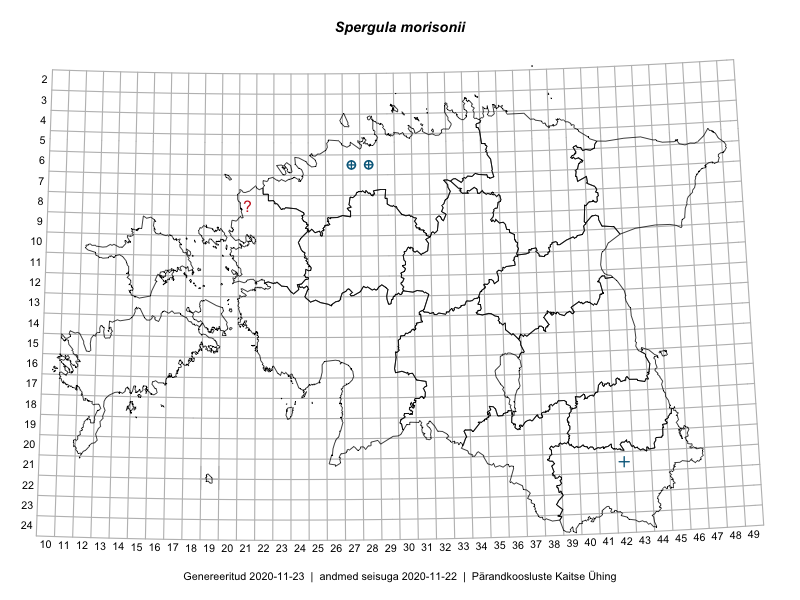

Spergula morisonii — kevad-nälghein
Caryophyllaceae :: Spergula morisonii Boreau (13); Spergula vernalis auct. (2)

Kaart põhineb 15 kirjel:
vaatlusi 1
herbaareksemplare 14
Taime kaasaegsed ja ajaloolised leiukohad asuvad 2 ruudus.
Tingmärgid ja ruutude arvud periooditi (U1 / V2 )
█ 2006–2020 (0/–)
◆/◇ 1971–2005 (0/0)
○ 1921–1970 (1/0)
+ kuni 1920 (2/1)
× hävinud (–/1)
? kaheldav (–/1)
| Ruut | Leidja(d) | Leiuaeg | Kirje |
|---|---|---|---|
| 06-28 | H. Salasoo | 1934–1938 | ruut/ala: Spergula vernalis auct. |
| 06-28 | H. Salasoo | 1934-06-17 | TU258647: Spergula morisonii Boreau |
| 06-28 | H. Salasoo | 1934-06-17 | TU258648: Spergula morisonii Boreau |
| 06-28 | H. Salasoo | 1934-06-17 | TU258649: Spergula morisonii Boreau |
| 06-28 | Albert Üksip | 1928-06-24 | TU258651: Spergula morisonii Boreau |
| 06-28 | Albert Üksip | 1934-06-19 | TU258652: Spergula morisonii Boreau |
| 06-28 | H. Salasoo | 1934-06-17 | TAM0065928: Spergula vernalis auct. |
| 06-28 | A. Üksip | 1928-06-24 | TAM0121312: Spergula morisonii Boreau |
| 06-27 | G. Pahnsch | 1876-08-01 | TAM0121313: Spergula morisonii Boreau |
| 06-27 | G. Pahnsch | 1878-06-24 | TAM0121314: Spergula morisonii Boreau |
| 06-28 | G. Pahnsch | 1878-08-03 | TAM0121315: Spergula morisonii Boreau |
| 06-27 | G. Pahnsch | 1879-07-01 | TAM0121316: Spergula morisonii Boreau |
| 06-27 | G. Pahnsch | 1879-07-01 | TAM0121317: Spergula morisonii Boreau |
| 06-27 | P. Glehn | TAM0121801: Spergula morisonii Boreau | |
| 06-28 | Jaak Ruubel | 1930-06-14 | TAM0129645: Spergula morisonii Boreau |
Ruutude arv uue atlase andmekogu järgi. Muuhulgas arvestab vanemat herbaariumi, 2005. aasta atlase välitöölehtedelt uuesti digitaliseeritud andmeid jne. Uue atlase andmekogust pärinevad andmed on kaardile kantud siniste sümbolitega.↩︎
Ruutude arv 2005. aasta atlase (Kukk, T., Kull, T., Eesti taimede levikuatlas. Eesti Maaülikool, Põllumajandus- ja Keskkonnainstituut, Tartu, 2005) järgi. Andmeallikana on kasutatud levik.exe programmi, kus igas ruudus on registreeritud vaid uusim leid. Seetõttu on vanemate perioodide kohta andmed puudulikud. Kasutatud levik.exe andmestikus leidub mõningaid kõrvalekaldeid atlase trükis ilmunud versioonist, sagedamini tarnade ja käpaliste seas. Lisaks leidub selles andmestikus valik liike (peamiselt väheste leidudega tulnuktaimed), mille kaarte trükis ei avaldatud. Vana atlase andmed ruutudest, milles ei ole uue atlase andmekogus leide enne 2006. aastat, on kaardil esitatud punaste sümbolitega. Vana atlase andmetel hävinud ja kaheldavaid leiukohti pole hilisemate (taas)leidude põhjal korrigeeritud.↩︎